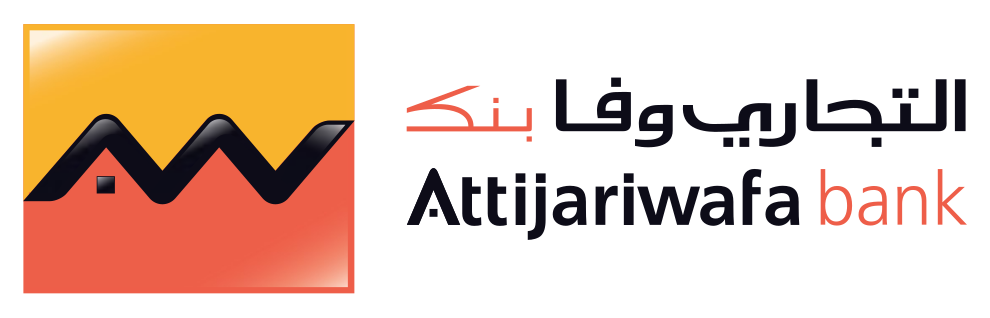
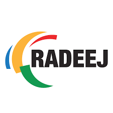

Animée par la technologie et l’analyse, je développe des systèmes intelligents mêlant algorithmes avancés, IA, data analytics et BI, du prototype à la mise en production, pour produire des gains concrets et mesurables.
Nancy, France
3 Langues (Français, Anglais, Arabe)
Douple Diplômée de l´école d'ingénieurs INSEA et l'université de lorraine
Désireuse de renforcer mon expertise technique, je souhaite évoluer dans un environnement innovant et participer au développement de projets stratégiques à forte valeur ajoutée.
Jeune diplômée de l’INSEA et de l’Université de Lorraine, spécialisée en Data Science, Intelligence Artificielle et Recherche Opérationnelle.
Passionnée par le Machine Learning, le NLP, l’optimisation et l’analyse décisionnelle, je souhaite mettre mes compétences en modélisation statistique, développement d’algorithmes, analyse de données et Business Intelligence au service de projets innovants à fort impact.
Développement d’une solution d’optimisation de la recharge de véhicules électriques en environnement dynamique via apprentissage par renforcement (RL), dans un contexte de recherche en optimisation énergétique.

Contribution à l’optimisation du processus de paiement afin de réduire les retards fournisseurs et améliorer la performance opérationnelle.
Automatisation et amélioration du processus de classification des marchandises afin d’optimiser le traitement douanier et la fiabilité des données.

Analyse des données de consommation d’eau et d’électricité afin d’améliorer le suivi des performances et d’optimiser la prise de décision opérationnelle.
Intéressé par mon profil ? N'hésitez pas à m'envoyer un message :